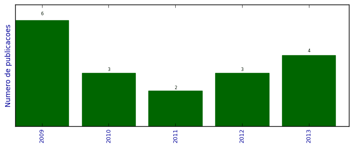

UFSM - Análise do Lattes
Artigos completos publicados em periódicos

Número total de itens: 18
(A1: 0, A2: 1, B1: 0, B2: 0, B3: 0, B4: 0, B5: 0, C: 0, Qualis não identificado: 17)
Legenda Qualis:
- Publicação para a qual o nome exato do Qualis foi identificado: Qualis <estrato>
- Publicação para a qual um nome similar (não exato) do Qualis foi identificado: Qualis <estrato> (nome similar)
- Publicação para a qual nenhum nome do Qualis foi identificado: Qualis não identificado (nome usado na busca)
2013
| 1. | CUNHA, T. A. ; SCHNEIDER, P. R. ; FINGER, C. A. G.. Modelo linear misto para o incremento em área basal de árvores individuais de cedro (Cedrela odorata L.) na Amazônia ocidental, Brasil. http://dx.doi.org/10.5902/198050987550. v. 23, p. 461-470, 2013.  [ citações Google Scholar | citações Microsoft Acadêmico | busca Google ] Qualis: Não identificado (http://dx.doi.org/10.5902/198050987550) |
| 2. | MILANI, E. ; SCHNEIDER, P. R. ; CUNHA, T. A.. Crescimento em diâmetro de árvores de Podocarpus lambertii em duas regiões fitogeográficas no Estado do Rio Grande do Sul, Brasil. http://dx.doi.org/10.5902/198050987550. v. 23, p. 443-448, 2013. [ citações Google Scholar | citações Microsoft Acadêmico | busca Google ] Qualis: Não identificado (http://dx.doi.org/10.5902/198050987550) |
| 3. | SCHNEIDER, PAULO RENATO ; ELESBÃO, LUIZ ERNESTO GRILO ; SCHNEIDER, PAULO SÉRGIO PIGATO ; LONGHI, RÉGIS VILLANOVA. Crescimento em altura dominante do Pinus elliottii e Pinus taeda em solos arenizados degradados no oeste do Rio Grande do Sul. Ciência Rural (UFSM. Impresso). v. 43, p. 1981-1986, 2013. [ citações Google Scholar | citações Microsoft Acadêmico | busca Google ] Qualis: A2 |
| 4. | SCHNEIDER,PAULO SÉRGIO PIGATO ; SCHNEIDER, P. R. ; FINGER, C. A. G.. Relação do quociente do diâmetro pela área basal com o autodesbaste em povoamento equiâneo de Pinus taeda L.. http://dx.doi.org/10.5902/198050987550. v. 23, p. 175-181, 2013. [ citações Google Scholar | citações Microsoft Acadêmico | busca Google ] Qualis: Não identificado (http://dx.doi.org/10.5902/198050987550) |
2012
| 1. | BRAZ, E. M. ; SCHNEIDER, P. R. ; MATTOS, P. P. ; THAINES, F. ; SELLE, G. L. ; OLIVEIRA, M. F. ; OLIVEIRA, L. C.. Manejo da estrutura diamétrica remanescente de florestas tropicais. Ciência Florestal (UFSM. Impresso). v. 22, p. 791-798, 2012. [ citações Google Scholar | citações Microsoft Acadêmico | busca Google ] Qualis: Não identificado (Ciência Florestal (UFSM. Impresso)) |
| 2. | BRAZ, E. M. ; SCHNEIDER, P. R. ; MATTOS, P.P. ; SELLE, G. L. ; THAINES, F. ; RIBAS, L.A. ; VUADEN, E.. Taxa de corte sustentável para manejo das florestas tropicais. Ciência Florestal (UFSM. Impresso). v. 22, p. 137-145, 2012. [ citações Google Scholar | citações Microsoft Acadêmico | busca Google ] Qualis: Não identificado (Ciência Florestal (UFSM. Impresso)) |
| 3. | SOUZA, C. A. M. ; FLEIG, F. D. ; SCHNEIDER, P. R. ; SILVA, G. F. ; THOMAS, C.. Eficiência de um modelo de afilamento ajustado sem e com estratificação por classe de quociente de forma para formação dos sortimentos de Pinus taeda L.. Ciência Florestal (UFSM. Impresso). v. 22, p. 125-135, 2012. [ citações Google Scholar | citações Microsoft Acadêmico | busca Google ] Qualis: Não identificado (Ciência Florestal (UFSM. Impresso)) |
2011
| 1. | ELESBÃO, L. E. G. ; SCHNEIDER, P. R.. Produção do Pinus taeda L. em povoamento desbastado na região dos Campos de Cima da Serra, Rio Grande do Sul. Ciência Florestal (UFSM. Impresso). v. 21, p. 119-124, 2011. [ citações Google Scholar | citações Microsoft Acadêmico | busca Google ] Qualis: Não identificado (em povoamento desbastado na região dos Campos de Cima da Serra, Rio Grande do Sul. Ciência Florestal (UFSM. Impresso)) |
| 2. | SCHNEIDER, P. R. ; FINGER, C. A. G. ; SCHNEIDER, P. S. P. ; FLEIG, F. D. ; THOMAS, C. ; FARIAS, J.. Quociente do diâmetro pela área basal e zonas de competição em povoamento monoclonal de Eucaluptus saligna. Ciência Florestal (UFSM. Impresso). v. 21, p. 757-766, 2011. [ citações Google Scholar | citações Microsoft Acadêmico | busca Google ] Qualis: Não identificado (Ciência Florestal (UFSM. Impresso)) |
2010
| 1. | HESS, A. ; SCHNEIDER, P. R.. Crescimento em volume de Araucaria angustifolia (Bertol.) Kuntze em três regiões do Rio Grande do Sul, Brasil. Ciência Florestal (UFSM. Impresso). v. 20, p. 107-122, 2010. [ citações Google Scholar | citações Microsoft Acadêmico | busca Google ] Qualis: Não identificado (Ciência Florestal (UFSM. Impresso)) |
| 2. | SELLE, G. L. ; FLEIG, F. D. ; SCHNEIDER, P. R.. Dendrograma de densidade para Hovenea dulcis Thunberg na região central do estado do Rio Grande do Sul, Brasil. Ciência Florestal (UFSM. Impresso). v. 20, p. 477-492, 2010. [ citações Google Scholar | citações Microsoft Acadêmico | busca Google ] Qualis: Não identificado (Ciência Florestal (UFSM. Impresso)) |
| 3. | SELLE, G. L. ; FLEIG, F. D. ; SCHNEIDER, P. R. ; ALBERNART, L. ; VUADEN, E.. Dendrograma de densidade para Hovenia dulcis Thunberg na Região Central. Ciência Florestal (UFSM. Impresso). v. 2-0, p. 474-492, 2010. [ citações Google Scholar | citações Microsoft Acadêmico | busca Google ] Qualis: Não identificado (Ciência Florestal (UFSM. Impresso)) |
2009
| 1. | FLORIANO, E. P. ; SCHNEIDER, P. R. ; FINGER, C. A. G. ; FLEIG, F. D.. Análise econômica da produção de Pinus elliottii na serra do sudeste, Rio Grande do Sul. Ciência Florestal (UFSM. Impresso). v. 19, p. 393-406, 2009. [ citações Google Scholar | citações Microsoft Acadêmico | busca Google ] Qualis: Não identificado (Ciência Florestal (UFSM. Impresso)) |
| 2. | HESS, A. ; SCHNEIDER, P. R. ; FINGER, C. A. G.. Crescimento em diâmetro de Araucaria angustifolia (Bert.) Kuntze em função da idade, em três regiões do Rio Grande do Sul. Ciência Florestal (UFSM. Impresso). v. 19, p. 7-22, 2009. [ citações Google Scholar | citações Microsoft Acadêmico | busca Google ] Qualis: Não identificado (Ciência Florestal (UFSM. Impresso)) |
| 3. | SCHNEIDER, P. R. ; FARIAS, J. ; FINGER, C. A. G. ; SCHNEIDER, P. S. P. ; FLEIG, F. D. ; THOMAS, C. ; Pedroso Filho, J. I.. Desempenho do Pinus echinata na região central do estado do Rio Grande do Sul, Brasil. Ciência Florestal. v. 19, p. 91-98, 2009. [ citações Google Scholar | citações Microsoft Acadêmico | busca Google ] Qualis: Não identificado (Ciência Florestal) |
| 4. | SCHNEIDER, P. S. P. ; FLEIG, F. D. ; SCHNEIDER, P. R. ; FINGER, C. A. G. ; CHAVES, C.M. ; MOREIRA, A.M.. Diagrama de manejo da densidade para povoamentos de Pinus taeda L. manejado sem desbaste. Ciência Florestal (UFSM. Impresso). v. 19, p. 433-448, 2009. [ citações Google Scholar | citações Microsoft Acadêmico | busca Google ] Qualis: Não identificado (manejado sem desbaste. Ciência Florestal (UFSM. Impresso)) |
| 5. | SOUZA, L.H.S. ; FINGER, C. A. G. ; SCHNEIDER, P. R.. Incremento volumétrico de Nectandra megapotamica (Spreng.) Mez emfloresta ombrófila mista.. Ciência Florestal (UFSM. Impresso). v. 19, p. 305-316, 2009. [ citações Google Scholar | citações Microsoft Acadêmico | busca Google ] Qualis: Não identificado (Ciência Florestal (UFSM. Impresso)) |
| 6. | ZANON, M. L. B. ; FINGER, C. A. G. ; SCHNEIDER, P. R.. Proporção de dióica e distribuição diamétrica de árvores masculinas e femininas de Araucaria angustifolia (bertol.) Kuntze, empovoamentos implantados. Ciência Florestal (UFSM. Impresso). v. 19, p. 425-431, 2009. [ citações Google Scholar | citações Microsoft Acadêmico | busca Google ] Qualis: Não identificado (Ciência Florestal (UFSM. Impresso)) |
(*) Relatório criado com produções desde 2009 até HOJE
Data de processamento: 11/04/2014 18:33:02